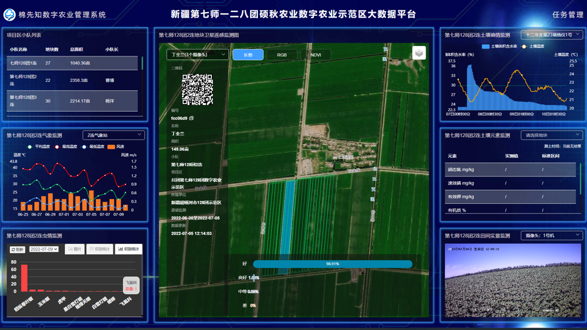

Agricultural GIS
Xinjiang Cotton Decision Management Support System
This project develops a cotton production decision management system and service platform for scientific, large-scale, and standardized agricultural technical services.

Focus
User and plot management, field production task management, crop growth monitoring, disease and pest warning, agricultural material services, and agronomic service management.
Methods
GIS platform design, data management, decision-support workflow design, and system validation for cotton planting areas.
Applications
Cotton production management, fertilization and irrigation decision support, and field-level agricultural service coordination.
Outputs
Prototype system functions for cotton plot management and production decision support.